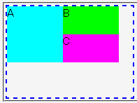
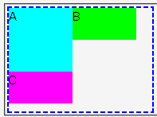

コンテナブロックの幅が狭いためにフロートが折り返されるとき、フローとの寄せ方は上寄せが左（右）寄せより優先されなければならないが、Operaは左（右）寄せを優先してしまう。
<div style="width:180px; height:130px; border:2px dashed blue;"> <div style="float:left; width:80px; height:80px; background:aqua;">A</div> <div style="float:left; width:80px; height:40px; background:lime;">B</div> <div style="float:left; width:80px; height:40px; background:fuchsia;">C</div> </div>
3つのフロートを並べていますが、コンテナブロックの幅の制限により「C」のフロートは折り返されます。このフロートがどこに置かれるかを確認してください。
Moz1.0.2での表示
Opera6.05での表示
左フロートと右フロートを交互に連続して置いた場合のバグとしてOperaバグ028があります。